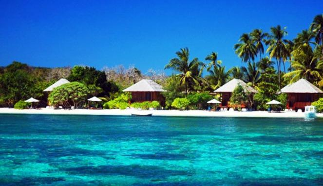
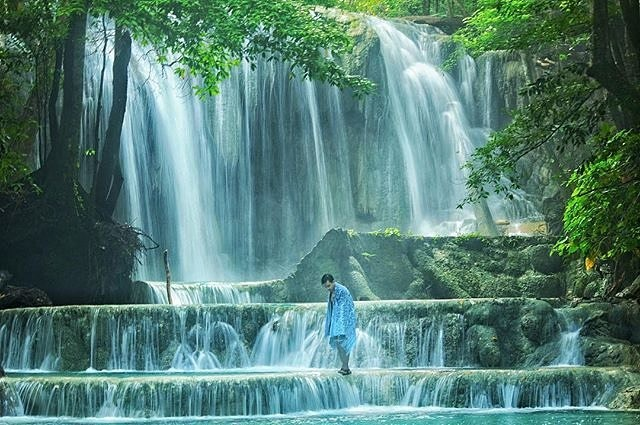
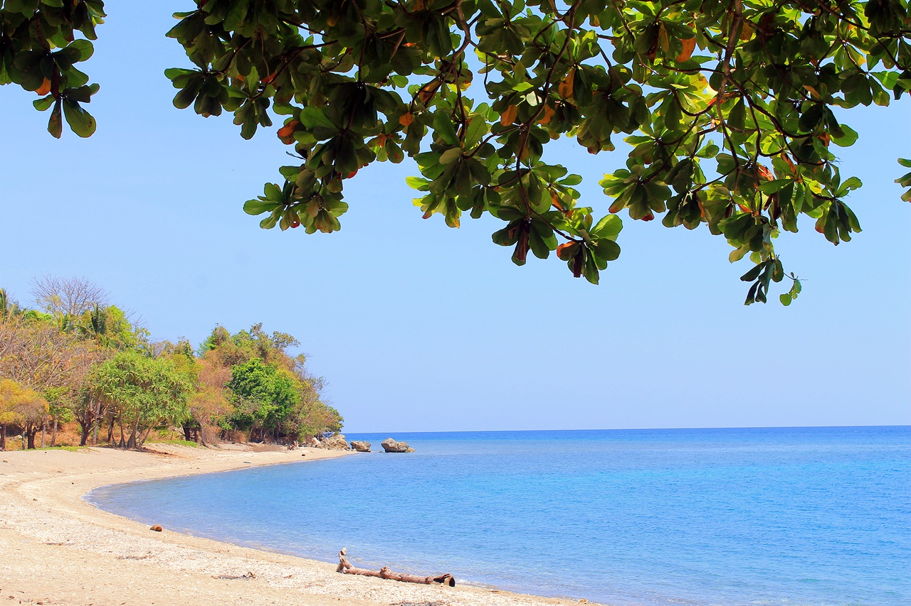
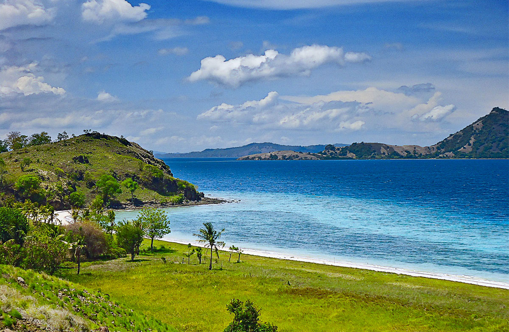
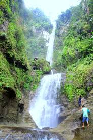

5 Tempat Wisata Terindah Di Sumbawa Nusa Tenggara Barat
November 14, 2017 Views : 4,99999Menyeberang ke sebelah timur Pulau Lombok terdapat sebuah pulau yang tak kalah kaya dalam menyimpan potensi wisata bahari. Namanya Pulau Sumbawa, pulau yang terbagi atas 4 kabupaten dan 2 kota ini memang juaranya dalam menerbitkan tujuan wisata yang mendunia. Salah satu daerah yang menjadi tujuan wisata di pulau ini adalah kabupaten Sumbawa.
1. Pulau Moyo, Wisata Mewah Tujuan Artis Dunia
 Di mata dunia Popularitas Pulau Moyo tidak kalah dengan Pulau Bali. Di pulau ini beberapa nama tokoh dunia yang terkenal semisal mendiang Lady Diana, Penyanyi Mick Jagger, hingga mantan pesepakbola yang pernah membela Manchester United, David Beckham dan Edwin van Der Sar pernah menghabiskan liburannya. Ternyata di dalam pulau yang namanya masih sedikit asing di telinga warga Indonesia ini berdiri sebuah resort mewah bernama Amanwana Resort yang tarif menginap per malamnya bisa untuk liburan keliling Jawa. Pulau ini menawarkan banyak sekali pilihan tempat berlibur seru baik di darat hingga di laut. Kegiatan outdoor menjadi pilihan utama saat liburan di pulau yang termasuk ke dalam wilayah kabupaten Sumbawa ini.2. Air Terjun Mata Jitu, Semua Orang Ingin Liburan ke Situ
 Beberapa pilihan tujuan wisata yang ada di pulau Moyo adalah destinasi air terjun, dan air terjun yang paling terkenal adalah Air Terjun Mata Jitu. Air terjun ini terletak di tengah hutan Pulau Moyo yang berada di administratif dusun Oiramu, desa Labuhan Aji, kecamatan Labuhan Badas, kabupaten Sumbawa. Air Terjun Mata Jitu begitu dikenal lantaran memiliki sumber air yang sangat jernih. Selain itu yang membuat air terjun ini terkenal dan menjadi salah satu spot utama untuk dikunjungi saat di Pulau Moyo adalah karakteristiknya yang memiliki 3 undakan dengan kolam berwarna hijau jernih. Kebersihan kola Air Terjun Mata Jitu sangat diperhatikan sehingga traveler tidak boleh sembarang mandi di kolamnya. Ada pemandian khusus yang telah disediakan untuk pengunjung yang mau bermain air.3. Pantai Ai Manis, Semanis Namanya
 Masih berada di sebuah pulau yang terletak di mulut Teluk Saleh di utara Pulau Sumbawa yaitu Pulau Moyo. Selain punya air terjun yang mempesona pulau ini juga memikat lewat pantai-pantainya yang indah. Salah satu yang wajib traveler kunjungi adalah Pantai Ai Manis yang dikenal memiliki taman bawah laut yang masih terjaga kelestariannya. Pantai Ai Manis dianugerahi dengan pantai berpasir putih yang lembut, terumbu karang yang tumbuh subur, dan ikan-ikan tropis yang berlimpah. Pantai ini belum seramai pantai-pantai yang ada di Lombok atau Bali sehingga traveler yang berkunjung bisa puas menikmati suguhan alam yang disajikan pantai ini. Nikmati pantai ini dengan cara kemping, snorkeling hingga diving jika mau puas menjelajahi setiap sudut Pantai Ai Manis.4. Teluk Saleh, Pusatnya Segala Pulau Tropis yang Indah
 Mungkin akan menjadi sebuah ulasan wisata yang sangat panjang sekali jika Travelingyuk menyebutkan satu per satu pulau-pulau kecil di kabupaten Sumbawa. Yang pasti pulau-pulau tropis di kabupaten ini sebagian besar berkumpul di perairan Teluk Saleh. Teluk Saleh sendiri adalah perairan yang berada di utara Sumbawa yang ukurannya sangat luas. Di tengah teluk ini banyak dijumpai pulau kecil yang kerap dijadikan tujuan island hopping. Teluk ini pula menyimpan kekayaan alam bawah laut yang luar biasa baik untuk kepentingan wisata hingga sumberdaya ikannya yang telah diekspor ke berbagai belahan dunia.5. Air Terjun Agal, Eksotis Tak Bisa Disangkal
 Beralih ke kecamatan Alas yang berjarak hanya 23 kilometer dari pelabuhan Poto Tano di Sumbawa Barat. Di dalam kecamatan ini ada satu lokasi wisata yang tidak boleh traveler lewatkan yaitu air terjun Agal. Air terjun ini berada di punggung gunung yang punya nama sama dengan air terjun dan butuh waktu trekking selama 2 jam untuk bisa menemukan rupa cantiknya. Air Terjun Agal adalah air terjun bertingkat dengan total tingkatan mencapai 10 buah dimana masing-masing tingkat punya tinggi 3-7 meter. Di setiap tingkat terdapat kolam yang airnya dipasok dari air pegunungan asli yang murni dan dingin. Air terjun ini memang belum dikembangkan sebagai tujuan wisata sehingga suasana alami dan menyatu dengan alam sangat kental terasa saat berada di bawah terjunan airnya.